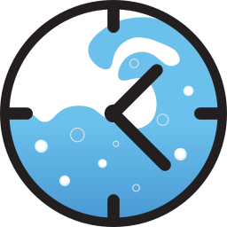

Time added when using "extend" on cooldown screen. Set to 0 to disable.
Cap or fully block usage of all target sites on specific days, during a specific time window. No session can bypass this once the limit is hit.

Half Full IntegrationWhat is Half Full?
Half Full is a productivity and task management app. By linking your account, you can make time-blocking limits conditional — a limit only applies while you still have unfinished tasks matching a pattern.
Example: Block YouTube from 1:00–5:00 PM, but only when you still have homework tasks pending. Once you check off all your homework in Half Full, the limit automatically lifts.
Patterns in Half Full use simple text matching (starts-with, ends-with, or contains). When creating a scheduled limit you can pick a pattern from the dropdown — the limit will only activate if today has at least one incomplete task matching that pattern.
v1.29